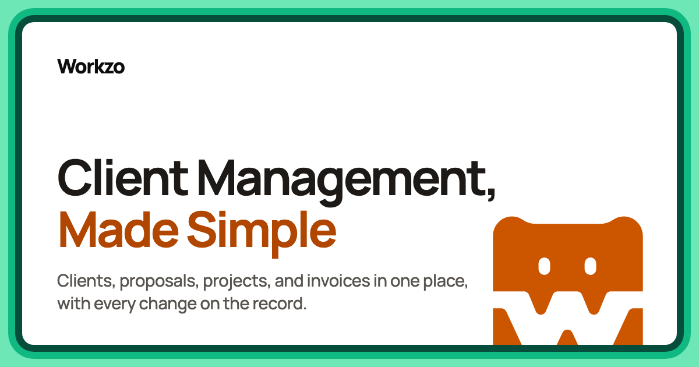

Workzo
A client-work platform for freelancers. Discovery, proposals, approved extra costs, documents and invoicing sit on one shared, dated record that both the freelancer and the client can see.
I'm a full-stack developer based in Kitchener, ON. I work mainly in and , with SQL and DevOps rounding out my skill set. I build scalable applications using monorepos and distributed architectures.
I've built and maintained production applications for organizations of varying sizes, including my own venture, Workzo. I take a hands-on, forward-deployed approach, pairing technical expertise with a strong understanding of business needs to deliver practical solutions.

A client-work platform for freelancers. Discovery, proposals, approved extra costs, documents and invoicing sit on one shared, dated record that both the freelancer and the client can see.